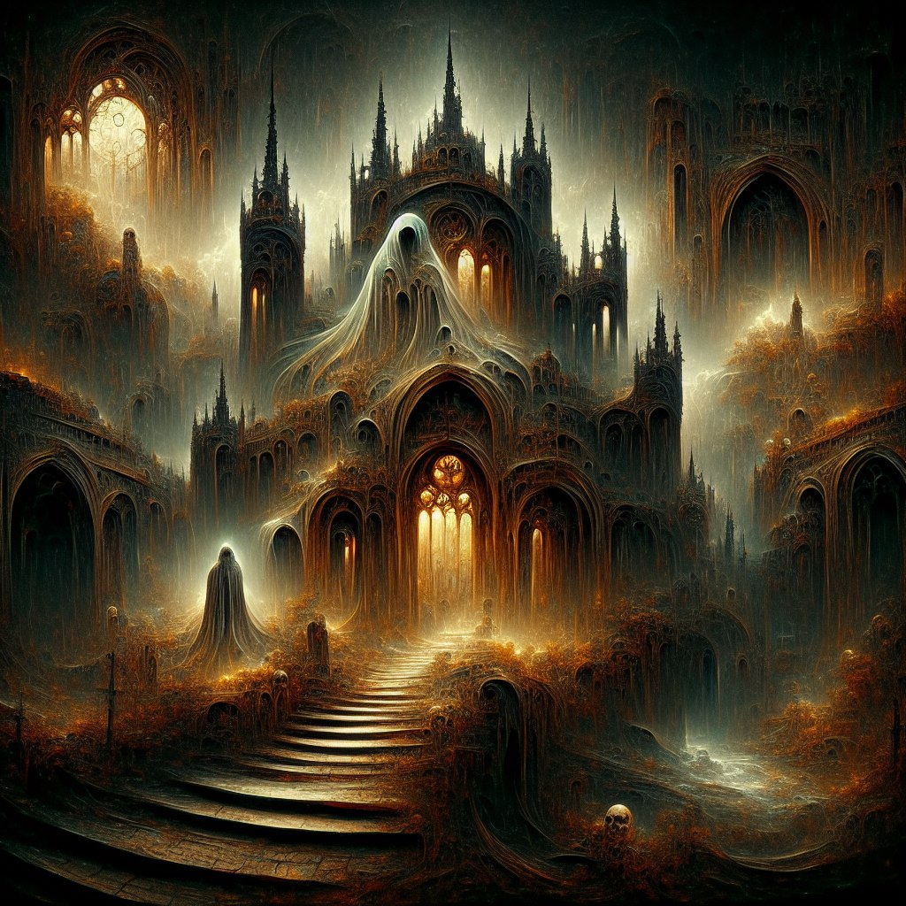

Квест нужен для получения Пояса Воина крови или Магистра
Для начала необходимо прийти в Подземелье Старого замка (173, -34) скорее всего вы будете тут делать квест Забытое соглашение, потому что это очень удобно.) https://daily.chaosage.app/?p=912
стартует квест в одном из тупиков перед решеткой слева от входа. чтоб туда попасть необходимо потянуть 5 рычагов в правой части подзмемелья(положение сохраниться навсегда)
ходим в тупике и ждем сообщения в чат
Призрак Короля Леорика>> Игрок : Эй ты! Моргни если слышишь меня, а лучше скажи вслух “да”. Только не надо бросать оружие и с криками убегать прочь. Только не опять то же самое.
Игрок>> Призрак Короля Леорика : да
Призрак Короля Леорика>> Игрок : Ох слава богам, хоть кто-то откликнулся и штаны не обмочил при этом. Меня зовут Леорик, король Леорик, если точнее… ну или то, что от него осталось, если уж совсем точно. Бояться меня не нужно, я и мухи не обижу. При жизни-то конечно мог и голову с плеч. Но последние лет сто-двести кроме страшных звуков ничего придумать не могу.
Призрак Короля Леорика>> Игрок : А ты, я смотрю, и не из пугливых. И фауна местная тебя не страшит, да? А у меня вот с этим проблема, некоторое время назад завелись здесь такие твари, которых и я побаиваюсь, да что там побаиваюсь, буквально душа в саван уход от их воя. Уверен, что подберись они ко мне поближе, то высосали бы последние силы и из призрака. Поэтому я сюда и убежал, здесь, понимаешь ли, укромный такой уголок, особо свирепых тварей в эту часть замка не пускает вон та решетка, и только я знаю на какой кирпичик надо нажать, чтобы она поднялась.
Призрак Короля Леорика>> Игрок : Да что я все о себе да о себе, сам то как? Как нынче герою живется? Доспех не натирает? Монстр крупный попадается или всё помельче? Клык по чем? А руда в шахтах всё такая же тяжелая? Рассказывай.
Игрок>> Призрак Короля Леорика : все ок бро
Призрак Короля Леорика>> Игрок : И это всё? Неужто жизнь у тебя такая скучная?
Игрок>> Призрак Короля Леорика : я пепега
Призрак Короля Леорика>> Игрок : Ну расскажи еще что-нибудь, я ж тут в замке уже незнамо сколько лет света белого не видел, все брожу по коридорам.
Игрок>> Призрак Короля Леорика : и ты пепега
Призрак Короля Леорика>> Игрок : Да, понимаю-понимаю, в наше время тоже не просто жилось рядовому герою.
Призрак Короля Леорика>> Игрок : К слову о монстрах, как я уже говорил, с недавних пор (лет 20, а может и все 140) тут поселились особо свирепые экземпляры, нежить в основном, с такими шутки плохи, даже если ты призрак. А мне очень надо попасть в северную часть замка. Понимаешь ли нам, призракам, надо периодически бродить там-сям, а здешние коридоры я уже все исходил вдоль и поперек, душа просит чего-нибудь новенького, а что может быть новее, чем забытые коридоры своего же старого замка? Может ты меня проводишь? А я помогу тебе открыть закрытые решетки, авось разживешься каким барахлом редким, мне то оно уже без надобности. Ну что скажешь? – Да, нет, не знаю?
Игрок>> Призрак Короля Леорика : да
Призрак Короля Леорика >> Игрок : Отлично, тогда давай двигаться, наш путь лежит на север, когда дойдем до нужного коридора, я дам знать. А по пути постараюсь не быть обузой, попробую вспомнить старое и немного поколдунствовать. А ты не дай этим тварям добраться до меня.
Дальше просто двигаемся к сундуку 3 по пути нужно оберегать нашего спутника, он дядя полезный. кидает прикосы. кастует оберег на себя. и удушение на врагов.
доходим до сундука, друг нам пишет в чат
Призрак Короля Леорика>> Игрок : Кажется мы дошли… Да-да, здесь не должно быть таких страшных тварей. Спасибо за помощь. Как и обещал, я помогу тебе пробраться в самые дальние коридоры замка, возможно ты найдешь там что-то полезное для себя. Направляйся отсюда в восточную часть замка, а я позабочусь о том, чтобы ничего не преграждало тебе путь. Ну всё, удачи. И ты это… если что – заходи.
Система>> Игрок : Вы успешно выполнили задание ‘Призрак Старого замка’ и получаете в награду 405000 опыта.
Система>>Игрок : Ваш новый друг-призрак заполнил казематы Арены Больших комаров обитателями своего замка. На Арене теперь доступны поединки с ужасными призраками.
После этого смело движемся к сундуку 2 в другой угол замка, где нас ждут желанные чертежи поясов